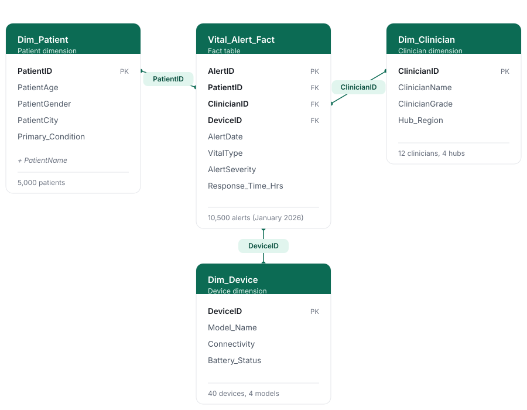
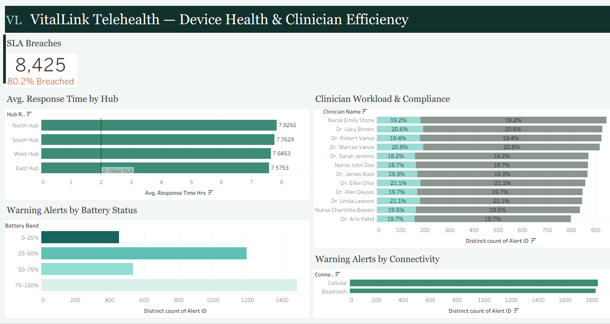

A two-page Tableau dashboard showing where telehealth alerts were waiting too long for
clinical review, and whether device battery or connection type explained the volume of
warning alerts.
Tools
Tableau
Scope
4 hubs, 12 clinicians
Records
10,500 alerts
Source
Telehealth monitoring data
The business problem
VitalLink Telehealth Solutions monitors patients with conditions such as diabetes and
hypertension through wearable devices that send alerts to clinical teams across four
regional hubs. Three gaps were putting that service at risk. Critical and routine
alerts arrived in a single feed, which risks alarm fatigue. Management could not see
which hubs were missing the 2-hour target (the SLA) for reviewing high-priority
alerts. And it was unclear whether older devices or low batteries were behind a rise
in warning alerts.
Left unresolved, those gaps could mean delayed responses to urgent patients,
compliance failures and the loss of hospital clients. The Clinical Operations Board
needed to know where the delays were and what was driving them.
The approach
The data was modelled as a star schema: one fact table of 10,500 alerts joined to
patient, clinician and device tables on their IDs, so any measure can be filtered by
hub, clinician, device or patient group.

The star schema behind the dashboard.
On top of that model I built calculated fields that flag every alert as inside or
beyond the 2-hour target, count and rate the breaches, calculate compliance for each
clinician, and band patients by age and devices by battery level. These feed a
two-page dashboard. The first page profiles the alerts by severity, vital sign, age
group, condition and city. The second tracks response time against the target by hub
and clinician, alongside battery and connectivity patterns.
Page 1: Patient Alerts Profile.

Page 2: Device Health and Clinician Efficiency. In the clinician chart, the teal part of each bar is the share of that clinician's alerts reviewed within 2 hours.
The insight
The delay is built into the process. It is not tied to one hub, one clinician
or one type of device. 8,425 of the 10,500 alerts (80.2%) took longer than 2
hours to review. All four hubs averaged between 7.6 and 7.8 hours, almost four times
the target, and all 12 clinicians met it on only 18% to 21% of their alerts despite
similar workloads (798 to 944 alerts each).
Worth noting
Critical alerts averaged 1.82 hours, inside the target, but 729 of the 1,591 (45.8%)
still took longer than 2 hours. Because the target is meant for high-priority alerts,
this figure matters alongside the 80.2% overall.
Only 15.2% of alerts were Critical. Warning (3,668) and Normal (5,241) alerts made up
the rest and accounted for 91% of the breaches, with Normal alerts waiting longest at
12.58 hours on average. Urgent alerts are a minority inside a large mixed feed, which
is the setting where alarm fatigue develops.
Several other explanations did not hold up. Alerts were spread evenly across vital
signs, patient conditions and cities. Patients aged 75 and over raised the most alerts
(3,397), but they are also the largest group, and patients in every age group raised
2.3 to 2.4 alerts each on average. Battery and connection type made no difference
either. Warnings were 33% to 36% of alerts in every battery band, and cellular and
Bluetooth devices produced almost identical numbers (1,843 and 1,825). The 75 to 100%
battery band shows the most warnings (1,487) only because it holds 16 of the 40
devices.
The recommendation
The evidence points to fixing the process rather than individual hubs or devices:
Sort alerts by urgency, so Normal and Warning alerts are reviewed on a planned, slower cycle and stop competing with Critical alerts.
Investigate why almost half of Critical alerts still miss the 2-hour target.
Review the target and the staffing behind it across all hubs together, not hub by hub.
Look beyond battery and connectivity for the cause of warning alerts, for example device model, calibration and alert thresholds.
What I learned
Two checks changed the story. An average inside the target hid the fact that almost
half of Critical alerts still missed it. And the totals for older patients and
high-battery devices looked like findings until I compared them with how many patients
and devices sat in each group, as I did with counts and rates in my DORI project.
When every hub and clinician performs about the same, the cause is usually shared, and
the fix belongs at process level.
Tools & skills
TableauData modellingCalculated fieldsLevel of detail calculationsDashboard designHealthcare analyticsData storytelling
Limitations
Documented plainly rather than glossed over, because knowing where an analysis stops is part of doing it properly.
The data covers one month (January 2026), so the findings describe this dataset only and show no trend over time.
The dashboard applies the 2-hour target to every alert, although it is meant for high-priority alerts. Both the overall rate (80.2%) and the Critical-only rate (45.8%) are reported.
Each device has one battery reading, so the battery bands compare devices rather than tracking one device over time.
The battery and connection results describe this dataset. They show no link with warning alerts here, which does not mean device condition never matters.